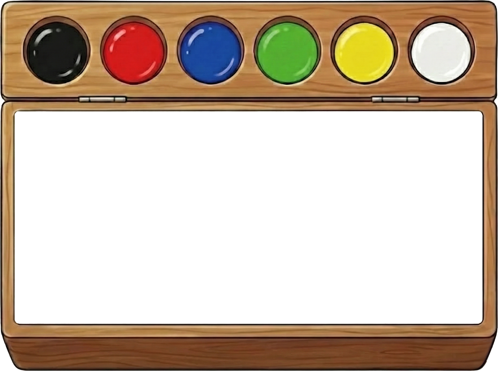
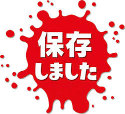

カメラを起動してください
🎨 顔でお絵かき
👃 鼻を動かして線を描こう！
😉 右ウインク → 色を変える（次へ）
😜 左ウインク → 色を変える（前へ）
😮 口を「あ！」と開ける → キャンバス消去
😑 両目を2秒閉じる → 画像を保存


👃 鼻を動かして線を描こう！
😉 右ウインク → 色を変える（次へ）
😜 左ウインク → 色を変える（前へ）
😮 口を「あ！」と開ける → キャンバス消去
😑 両目を2秒閉じる → 画像を保存